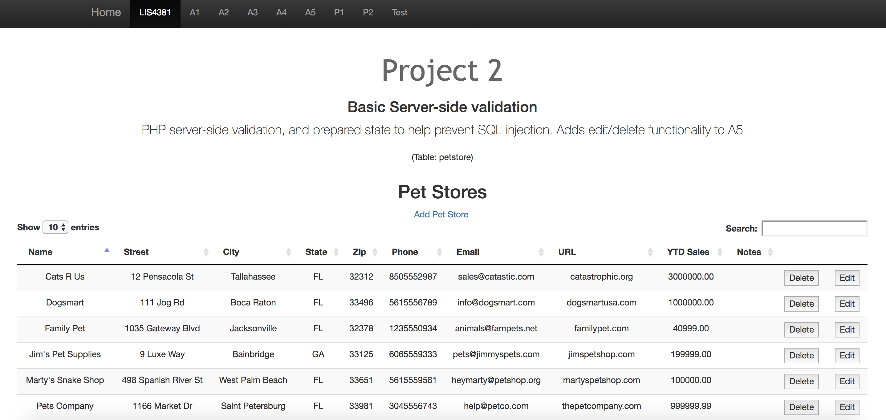
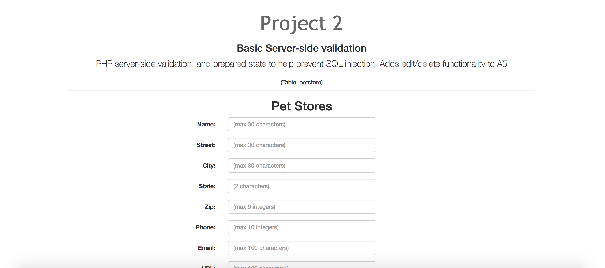
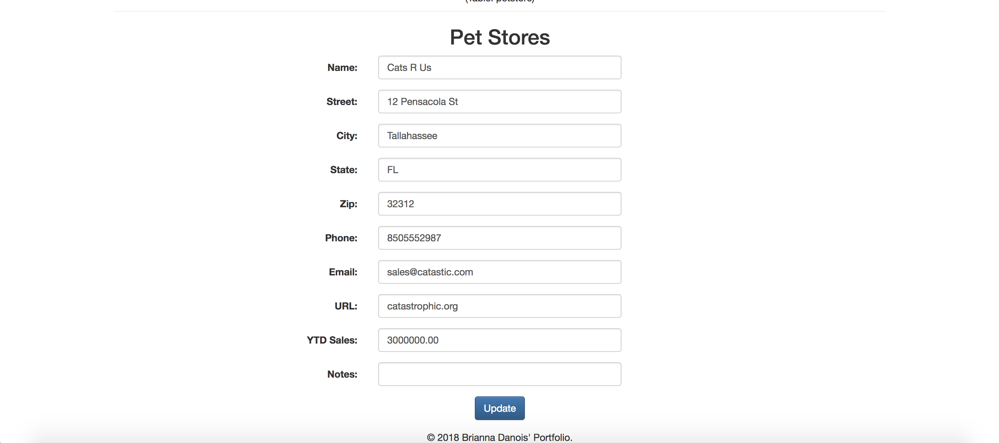

Throughout the second half of this course we developed an online, mobile-first portfolio utilizing a bootstrap template. Assignment 4, Assignment 5 and Project 2 consisted of developing a web form for petstores that connected to a database.
For assignment 4 we developed the display layout for the petstores already in the MySQL database.
We also enabled an add form that allows users to add petstores. This add form was equipped with client side validation so the user only submitted valid input.
For Project 2, our final development for the course, we enabled server-side validation to the add form, and added the delete and edit features. The edit feature redirected the user to the add form but populated the fields with the data from the database. Once the user clicks update the server-side validation would ensure the data was valid and update the MySQL database with the new input.